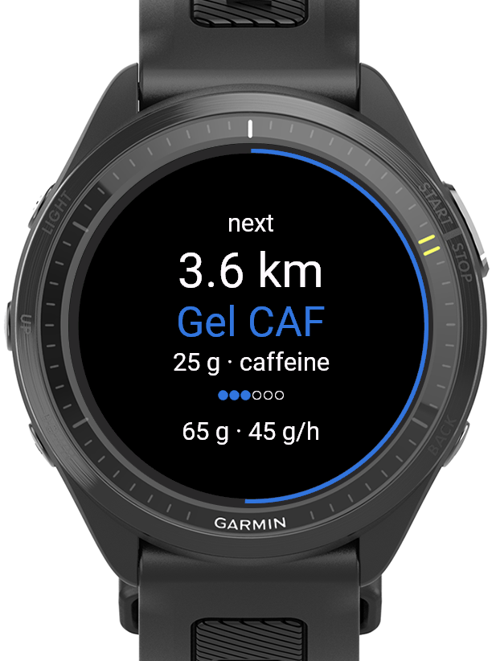
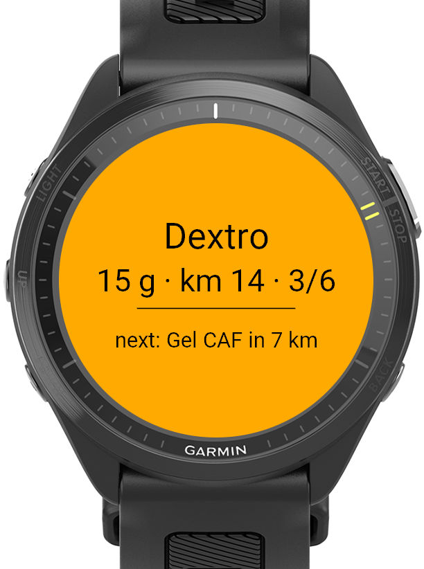
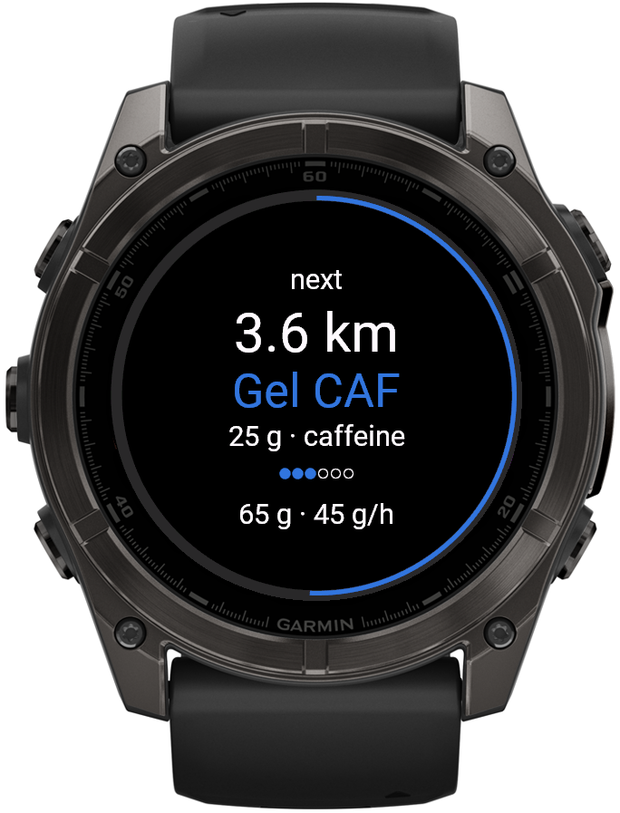
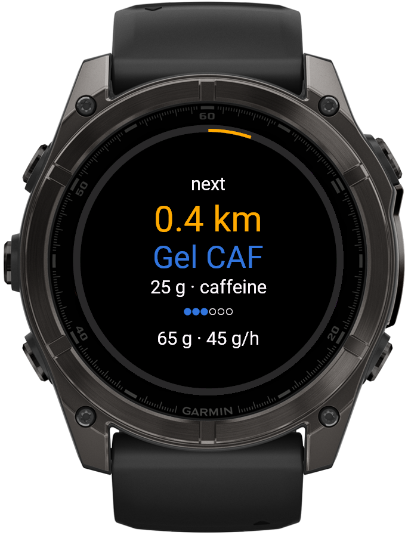
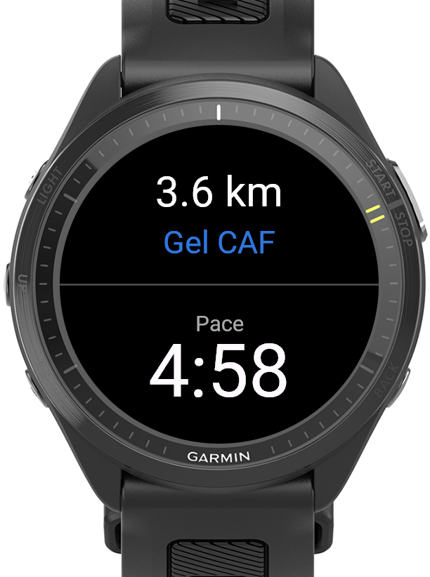
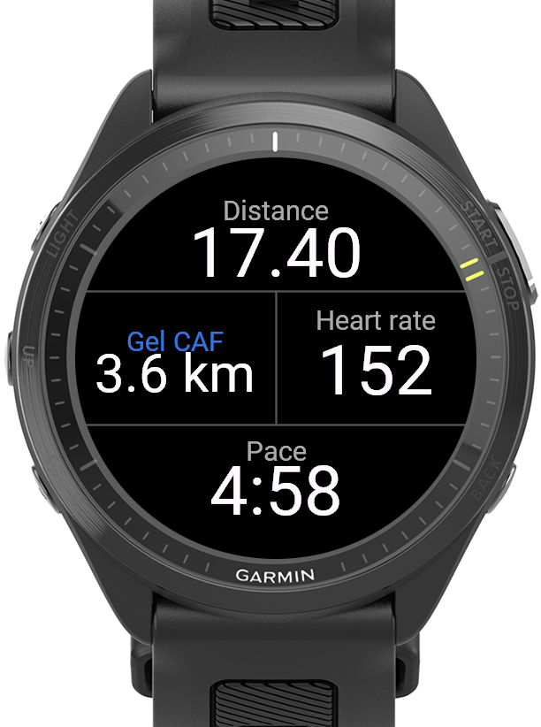

Je voedingsplan.
Op tijd.
Gel, Dextro, cafeïne: stel elke stap zelf in. FuelCue trilt vlak voordat het zover is, zodat je nooit meer een gel mist.

Bouw het als
een training.
Een reeks stappen op afstand of tijd, met herhalingen. Elke stap heeft een eigen naam, grammen en cafeïne. Tot 5 schema's, te kiezen op het horloge.
- Per schema alles op afstand (km) of alles op tijd (min)
- Herhalingen krijgen automatisch een nummer: Gel #1, #2, #3
- Een gel vóór de start telt mee, zonder melding
Marathon · afstand
Net vóór
het moment.
30 s of 50 m van tevoren (instelbaar), zodat hij nooit samenvalt met je km- of rondemelding. Trilling, toon en een volledig scherm met wat je neemt, het geplande moment en je positie.

Zie het aankomen.
Een aftelring, wat er komt, en je koolhydraten tot nu toe en per uur. Het aftellen kleurt amber in de laatste 500 m of minuut.


Vol, half of een hoekje.
FuelCue past in de datavelden die je al gebruikt.


Klaar in een minuut.
- Installeer FuelCue uit de Connect IQ Store en zet het in een datascherm van je hardloopprofiel.
- Zet Waarschuwingen → Connect IQ aan in de activiteitinstellingen.
- Stel je schema's in via de Connect IQ-app: FuelCue → Instellingen. Schema 1 werkt direct (6× 30 min Gel).
- Kies een schema op het horloge: activiteitmenu → Connect IQ-velden → FuelCue.
In Garmin Connect.
- Grafieken: koolhydraten tot nu toe en per uur
- Overzicht: totaal koolhydraten, voedingsmomenten, cafeïnemomenten en schema
- Geplande waarden: FuelCue herinnert je, je hoeft nooit op een knop te drukken
Goed om te weten.
Wat is FuelCue?
FuelCue is een gratis dataveld voor Garmin-horloges (Connect IQ) dat je tijdens het hardlopen herinnert wanneer je een gel of andere voeding neemt. Je stelt je eigen schema in op afstand of tijd, en FuelCue trilt, piept en toont een schermvullende melding vlak voor elk moment.
Welke Garmin-horloges ondersteunt FuelCue?
Alle ronde Garmin-horloges met Connect IQ 5.0 of nieuwer, waaronder Forerunner 165, 170, 255, 265, 570, 70, 955, 965 en 970, fēnix 7, 8, 9 en E, epix (Gen 2) en epix Pro, Enduro 3, MARQ (Gen 2), Venu 2, 3 en 4, en vívoactive 5 en 6.
Kan ik verschillende soorten voeding in één schema combineren?
Ja. Elke stap heeft een eigen naam (bijvoorbeeld Gel, Dextro of Gel CAF), een eigen hoeveelheid koolhydraten in grammen en een optioneel cafeïnelabel. Stappen kunnen herhalen, en herhalingen krijgen automatisch een nummer.
Kan ik plannen op afstand of op tijd?
Allebei. Elk schema is helemaal op afstand (km) of helemaal op tijd (minuten), met stappen van 0,5 tot 100 km of van 5 tot 600 minuten.
Waarom komt de melding eerder?
Standaard komt de melding 30 seconden of 50 meter vóór het geplande moment, zodat hij niet samenvalt met de km- of rondemelding van Garmin. Instelbaar van 0 (precies op het moment) tot 2 minuten of 200 meter.
Moet ik op een knop drukken als ik een gel neem?
Nee. FuelCue is een herinnering, geen logboek. Het slaat de geplande koolhydraten op in je activiteit, als grafieken in Garmin Connect, zonder knoppen die je opname kunnen verstoren.
Is FuelCue gratis?
Ja. FuelCue is gratis, zonder abonnement, reclame of account. Een donatie via PayPal wordt gewaardeerd.
In welke talen is FuelCue beschikbaar?
Engels, Nederlands, Duits, Frans, Spaans en Italiaans, op het horloge en in de instellingen.
Gratis. Altijd.
Geen abonnement, geen reclame, geen account. Helpt FuelCue je naar de finish? Een donatie wordt gewaardeerd :)
Doneer via PayPal